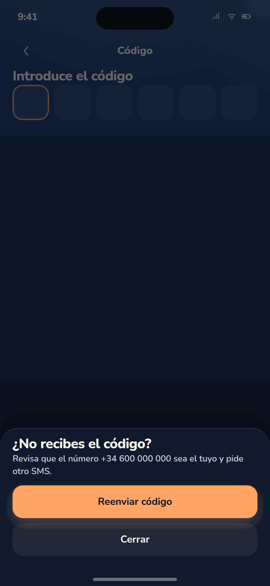
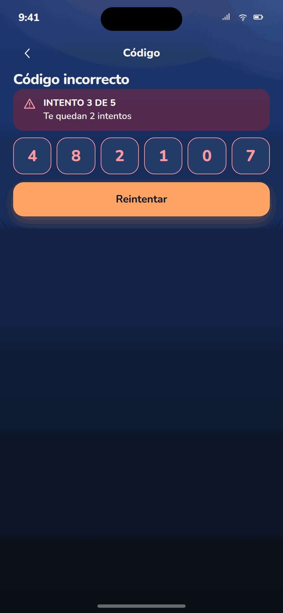
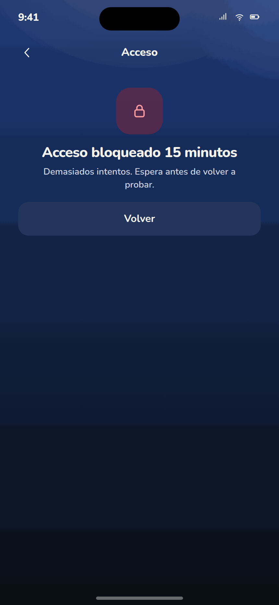
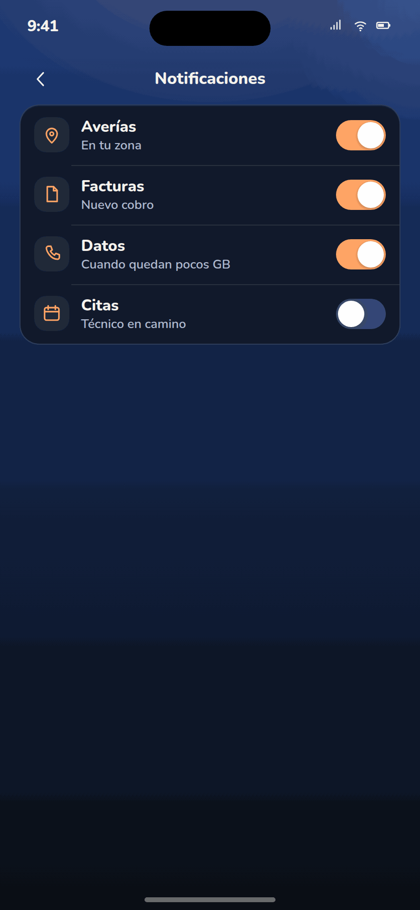
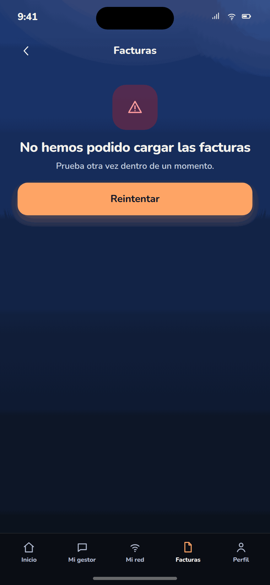
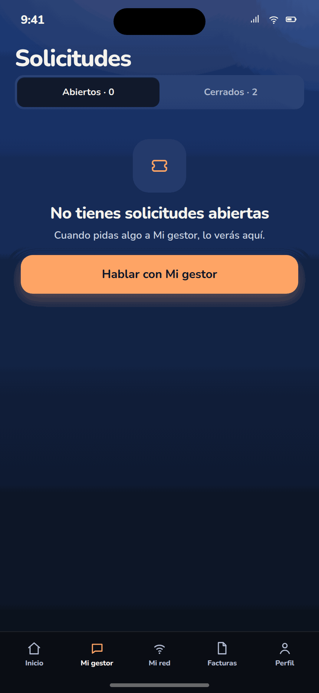
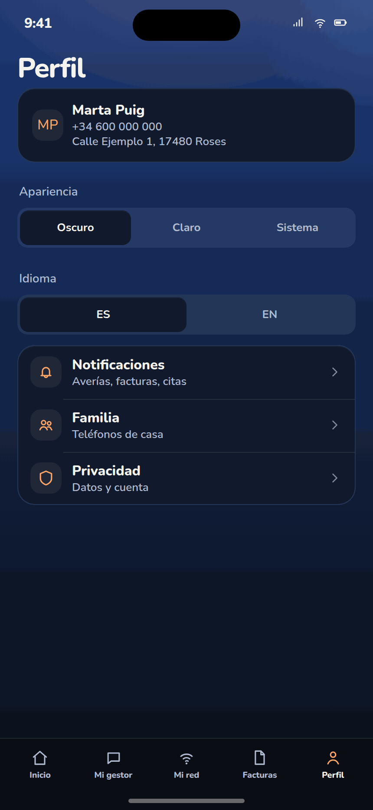

Как начать
Вход по коду из SMS, подключение роутера к Mi red, извещения и настройки — коротко и по шагам.
Вход — по коду из SMS
Введите номер телефона и код из SMS, пароль придумывать не нужно. Если SMS задерживается, через минуту можно запросить новый код, а приложение подскажет, что проверить.



Ошиблись — приложение подскажет
Если код неверный, приложение покажет, сколько попыток осталось. Код действует пять минут. После пяти неверных попыток вход снова откроется через 15 минут.



Дайте приложению увидеть ваш роутер
Чтобы показать устройства дома, OrroFi подключается к роутеру через домашнюю сеть. iPhone спросит разрешение на доступ к локальной сети. Если вы его не дали, приложение покажет, где включить доступ в настройках, а остальные разделы продолжат работать.


Узнавайте о важном вовремя
Приложение сначала объяснит, зачем ему извещения, и только потом спросит разрешение. Какие извещения получать, вы выбираете в настройках.


Нет сети — видно последние данные и время
Если связь пропала, приложение покажет последние данные с отметкой времени и кнопку «Повторить». Если что-то не загрузилось, оно так и скажет, без пугающих сообщений.



Светлая или тёмная — как удобнее
Выберите светлую или тёмную тему или доверьте выбор телефону. Приложение говорит по-испански и по-английски, а размер текста следует настройкам iPhone.
